Olivia Palermo (born February 28, 1986) is an American socialite. Palermo came to prominence after being cast in the reality television series The City in 2009, which documented the personal and professional lives of Whitney Port and her rich friends.
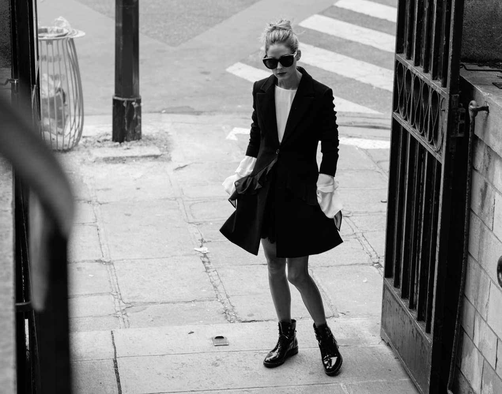
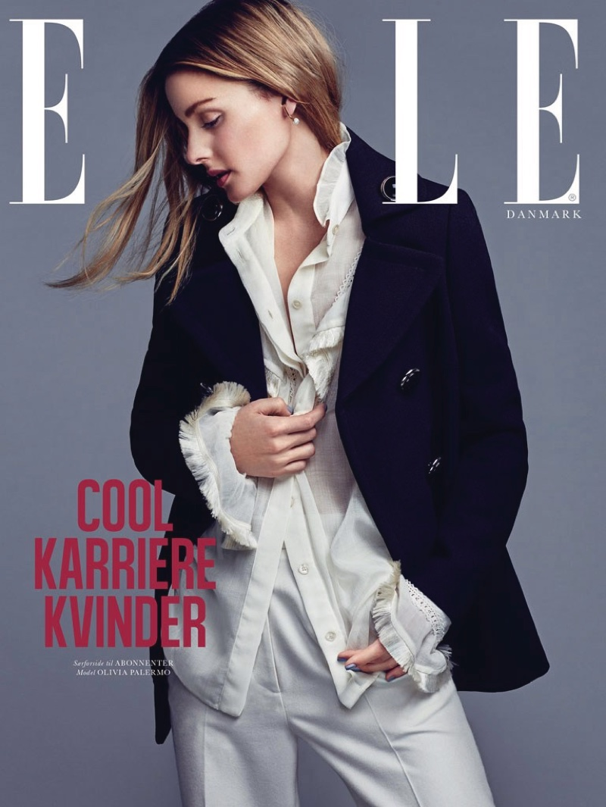
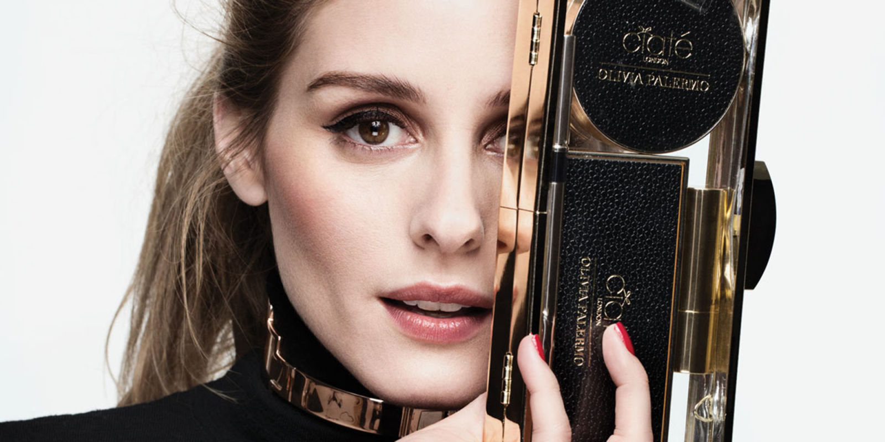
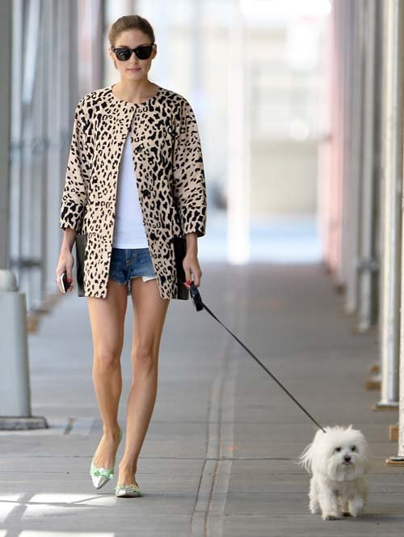
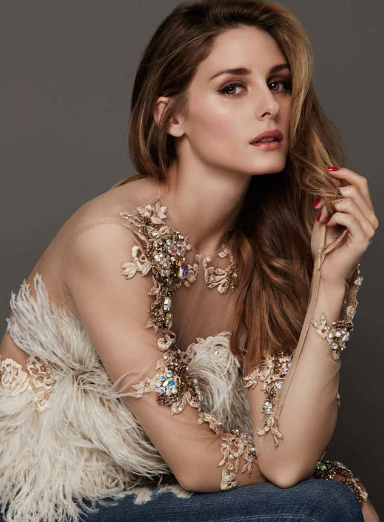
OP looks gorgeous,doesn't she?
 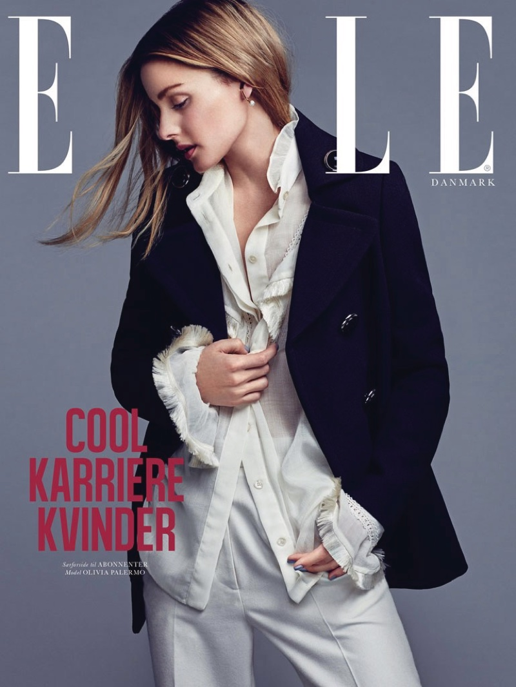
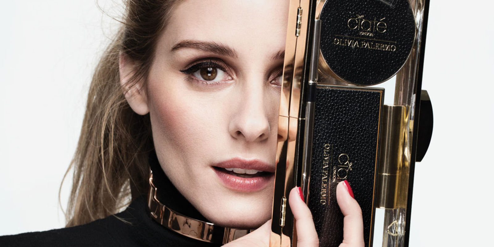
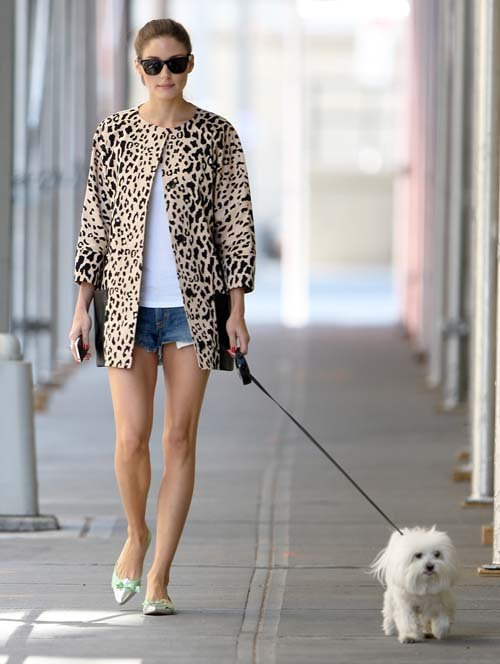
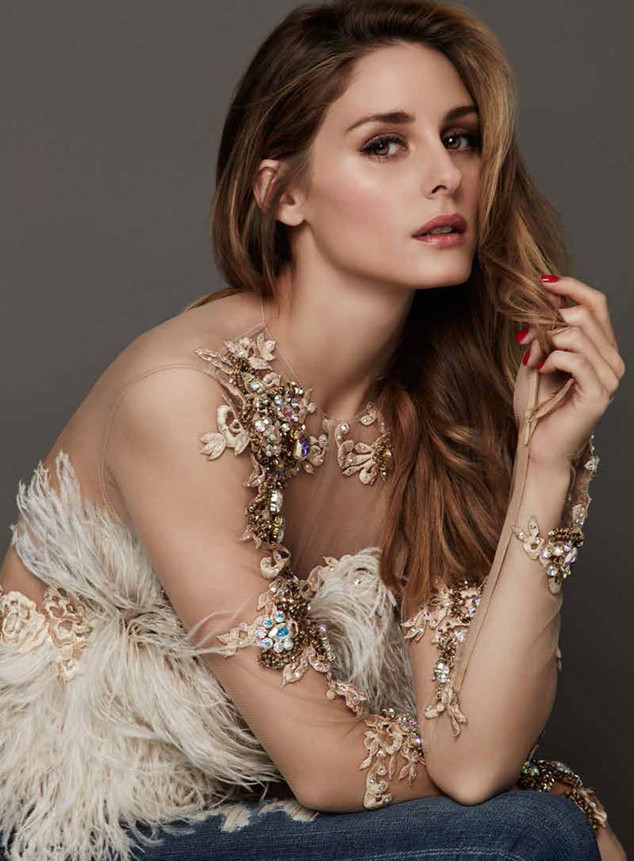
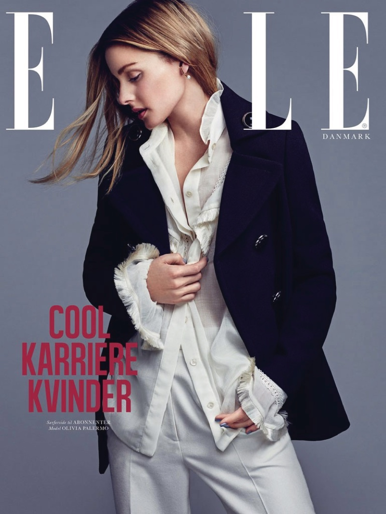
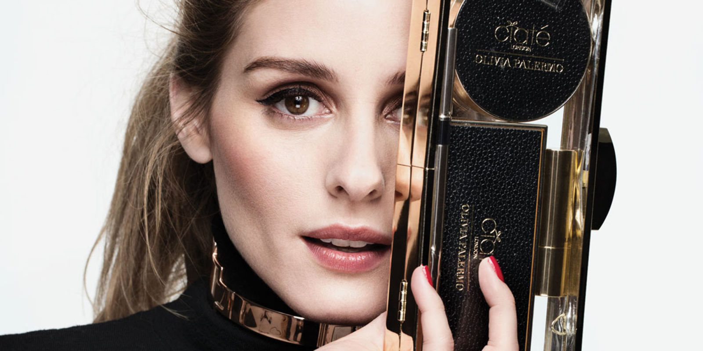
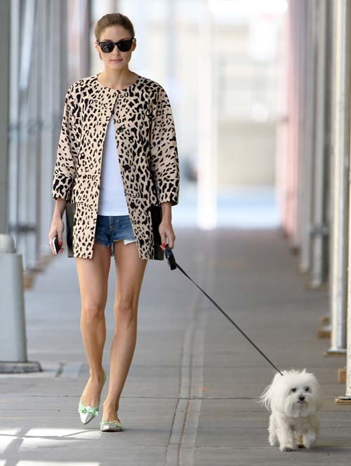
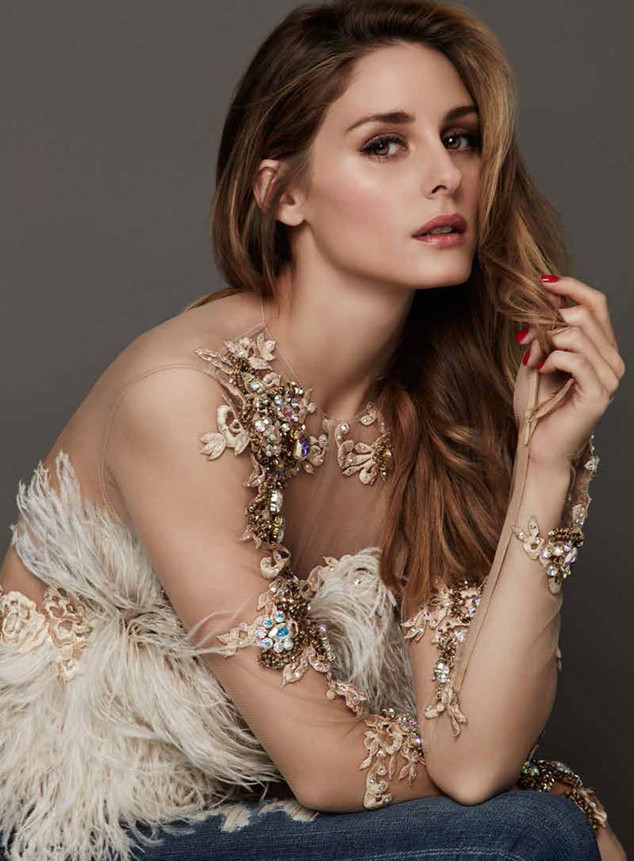